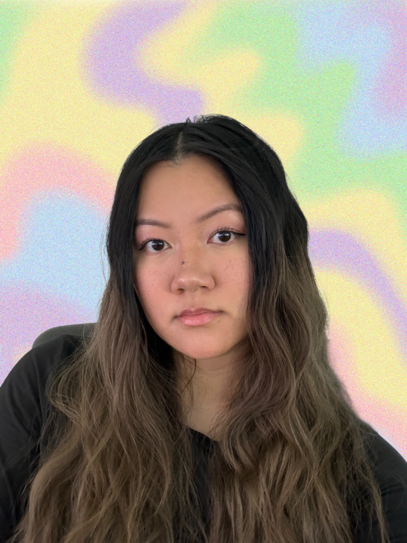

Project Tile
GigSmart
Worker Location Tracking
Creating a live location map for businesses to track workers during active shifts

Hi! My name is Phan (like a baby deer).
4+ years designing products across complex B2B and B2C ecosystems at GigSmart. Pursuing opportunities in healthtech. Based in Seattle. 🌦️
My interest in healthcare began while studying Environmental Health at the University of Washington and became deeply personal after experiencing my father's long battle with cancer. Those experiences shaped my interest in how healthcare, information, and support systems affect people's lives.
Today, I want to design products that reduce complexity, increase access, and help people make informed decisions about their health and well-being. After several years designing operational systems and workflows, I'm excited to apply those same skills to products that improve people's experiences with healthcare.
GigSmart
Creating a live location map for businesses to track workers during active shifts
GigSmart
Enhancing the worker profile to highlight important worker information
GigSmart
Improving the copy, illustrations and functionality to increase professionalism and trustworthiness
GigSmart
Creating a functionality for businesses to reduce shift creation redundancy